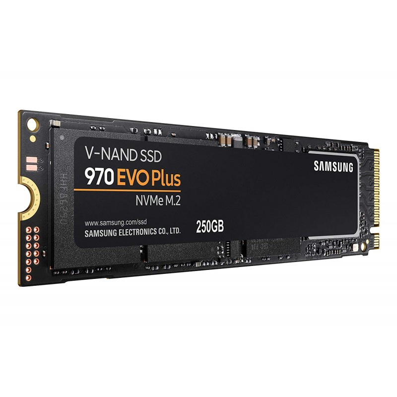
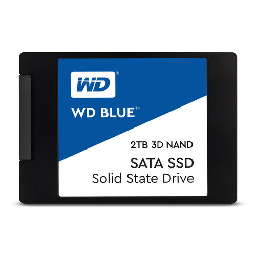
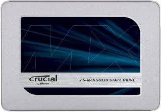

SSD Samsung 970 EVO Plus 1TB
- NVMe PCIe Gen 3.0 x4
- Velocidades de lectura/escritura hasta 3500/3300 MB/s
- Ideal para gaming y trabajo profesional
- Alta durabilidad y garantía de 5 años
En TechParts ofrecemos una amplia selección de discos duros y unidades SSD para optimizar el almacenamiento y rendimiento de tu computadora.
Desde soluciones económicas hasta opciones de alto rendimiento, tenemos la unidad perfecta para cada necesidad.
Contacta a nuestro equipo para recibir asesoría personalizada y encontrar el disco duro o SSD ideal para tus necesidades y presupuesto.
Estamos disponibles en redes sociales y chat en línea para ayudarte.


